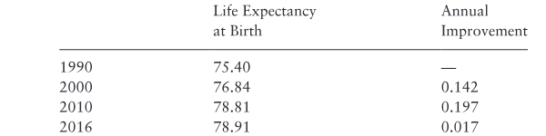

S. Jay Olshansky, PhD; Bruce A. Carnes, PhD
- Healthy Longevity 2019: Review
- Journal of Gerontology: Medical Sciences, 2019, Vol. 74, No. S1, S7-S12
- DOI:
10.1093/gerona/glz098 - Advance Access publication April 19, 2019
- University of Illinois at Chicago, Division of Epidemiology and Biostatistics
- University of Oklahoma
- Address correspondence to: S. Jay Olshansky, PhD, University of Illinois at Chicago. E-mail:
sjayo@uic.edu - Received: February 2, 2019
- Editorial Decision Date: April 3, 2019
- Decision Editor: Anne Newman, MD, MPH
Abstract
The rise in human longevity is one of humanity's crowning achievements. Although advances in public health beginning in the 19th century initiated the rise in life expectancy, recent gains have been achieved by reducing death rates at middle and older ages. A debate about the future course of life expectancy has been ongoing for the last quarter century. Some suggest that historical trends in longevity will continue and radical life extension is either visible on the near horizon or it has already arrived; whereas others suggest there are biologically based limits to duration of life, and those limits are being approached now. In "inconvenient truths about human longevity" we lay out the line of reasoning and evidence for why there are limits to human longevity; why predictions of radical life extension are unlikely to be forthcoming; why health extension should supplant life extension as the primary goal of medicine and public health; and why promoting advances in aging biology may allow humanity to break through biological barriers that influence both life span and health span, allowing for a welcome extension of the period of healthy life, a compression of morbidity, but only a marginal further increase in life expectancy.
Keywords
Longevity; Public Health; Life Expectancy
One of the more spirited debates in science today involves questions of how long people can live, whether resources should be directed toward life extension versus health extension, and what is standing in the way of rapid progress in efforts to slow the biological process of aging? At the center of these debates are two fundamental questions: is there a limit to human longevity, and if there is one, are we close to it? This debate and a closely related effort to modify the basic biological processes of aging now has the eye of entrepreneurs and scientists that envision a breakthrough in aging biology in time to positively influence the health and longevity of most people alive today (1). A breakthrough of this kind would likely be the most impactful public health revolution in this century (2). The possible impact of such a breakthrough on life expectancy, a population-based metric, is likely to be small for reasons to be described later, but justification for research on aging biology as a new method of Primary Prevention (3) to enhance the health span of individuals should not be influenced by an answer to this question. Using aging biology as a preventive measure is hypothesized to compress morbidity and extend the period of healthy life; living longer in good health would be the bonus.
Obstacles to breakthroughs in aging biology are both prevalent and challenging, but one obstacle is avoidable: assertions of radical increases in life expectancy and maximum life span that are supported primarily by hyperbole, exaggeration, misinformation, and secondary gain. Therein lies the problem. The "inconvenient truths about human longevity" described here yield insights into why there are limits to human longevity; why predictions of radical life extension are unlikely to be forthcoming; why health extension should supplant life extension as the primary goal of medicine and public health; and why recent efforts to promote aging biology based on exaggerated claims about the future of human longevity stand in the way of funding for aging science.
Is There a Ceiling on Human Longevity?
Let's begin with a basic question: is there a limit to how long we can live? One might ordinarily think this would be an easy question to answer given that death has always called upon humanity with such consistency and regularity (4), resembling a "law of mortality" that was first proposed by Benjamin Gompertz in 1825 (5). Nevertheless, there remain diametrically opposed answers to this question. One mathematical demographer suggested that "over sufficiently long time periods, it is not at all unusual for death rates to decline by half or more," and therefore "there is simply no convincing evidence (demographic, biological or otherwise) of a lower bound on death rates other than zero" (6).
Make no mistake about it, this is a declarative statement that because death rates declined in the past, they can and will continue to do so indefinitely into the future such that one more day of life can always be manufactured by medical technology. The result according to this line of reasoning is death rates of zero, and this of course translates into immortality. Although it may seem odd to use a purely mathematical line of reasoning to formulate a hypothesis about a fundamentally biological phenomenon such as human longevity, in the field of aging this is common because duration of life is often studied by scientists that work exclusively with mortality statistics, without considering the biology that drives the phenomenon being observed.
This mathematical line of reasoning, suggesting that survival time can be manufactured indefinitely by hypothetical medical technologies that do not yet exist, is suspiciously close to a mathematical argument formulated by the Greek philosopher Zeno in approximately 450 BC, referred to as Zeno's Paradox (7). In Zeno's purely mathematical description of a problem in physics, an argument is made that an arrow shot at a tree will never reach its target, and a tortoise with a head start in a race with a hare will never be overtaken, because the distance between the two can, mathematically, be reduced by half indefinitely, never reaching zero. Of course, in the real world the arrow always reaches its target and the hare always surpasses the tortoise because the mathematical equation fails to comport with the reality of basic physics, just as mathematical arguments for immortality fail to consider limits or ceilings imposed by human biology, notwithstanding declarative statements about future radical increases in longevity without biological evidence to support them.
A simple example reveals the problem with mathematically derived claims for immortality. Consider the current world record for the one-mile run. Charles Westhall from England first set the record in 1855 when he ran a mile in 4 minutes 28 seconds. The record declined linearly since then to the current record set by Hicham El Guerrouj in 1999 at 3 minutes and 43.13 seconds. The rate of improvement in world record running times for the mile in the last 150 years is every bit as linear as the rise in life expectancy at birth in humans over the same time period (8). It would be a simple matter to extend this historical trend linearly into the future, and forecast that a mile will be run instantaneously several centuries from now. This is a laughable exercise to even the casual observer, but virtually identical to the effect of deploying purely mathematical arguments to support radical life extension and immortality in the future, or a prediction that life expectancy in the past was zero based on back-casting extrapolation. The inconvenient truth is, reality gets in the way.
Improvements in world record running times for the mile have not changed in the last 19 years, and for decades prior to 1999 the rate of improvement decelerated. World records for other Olympic events have also decelerated to a snail's pace in the modern era (9,10). This phenomenon may be referred to as "peak Olympics" or "peak longevity" when applied to the topic of this article; an age when it is no longer possible to push the functioning of the human body much beyond its current limits (11). Although there is no reason to believe that there are specific biologically based constraints on running the mile, skating 1,000 meters, or the distance a javelin can be thrown, the basic design of the human body nevertheless imposes indirectly determined limits on strength, speed, and duration of life. There is no reason to believe that natural selection favored such limits explicitly, but the limits exist nonetheless. However, this reality does not mean that humans should stop seeking ways to improve and extend our health span.
A description of some of these biologically based limits on human longevity imposed by body design, including the Achilles heel of an aging brain, was described years ago by Olshansky and colleagues (12,13). The fact is, humans cannot run as fast as a cheetah, jump as high as a gazelle, or live as long as a Greenland shark (392 +/- 120 years) because the body design of each species, which is based on a genetically determined set of life history attributes that evolved over millions of years, are not optimized with longevity as the end game. Aging as we know it is the unintended consequence of accumulated damage, coupled with imperfect repair mechanisms, to the same human biology that also gives us life. Human longevity should best be thought of as an inadvertent byproduct of fixed genetic programs that optimize for growth, development, reproduction, and ensuring the reproductive success of offspring, for example grandparenthood (14). The first inconvenient truth is that purely mathematical arguments used to support radical life extension are inherently flawed for the same reason that Zeno's Paradox cannot be true: because just like Zeno, who failed to invoke basic rules of physics, purveyors of mathematical arguments supporting radical life extension fail to take into account the biological reality that drives longevity determination in humans.
There are two other mathematically based predictions of radical life extension that are similar to the one stated earlier. In one case, de Grey (15) contends that humans are approaching an "actuarial escape velocity," a hypothetical world in which "mortality rates fall so fast that people's remaining (not merely total) life expectancy increases with time." For this to happen, medical technology would need to manufacture survival time faster than the rate of living is taking it away, a condition de Grey contends, without evidence, is forthcoming. de Grey (16, p. 393) further contends that declines in death rates will soon accelerate dramatically at older ages, past age 105, until the probability of death will "... fall to 5% or lower, and most to below 1% ..." As a frame of reference, death rates at ages more than 105 years now are at 50 per cent or higher (17,18). The absence of empirical, biological, or even suggestive evidence to support any of these claims, especially those with specific mathematical predictions about future death rates attached to them, demonstrates that these estimates are derived from nonscientific methods. This exaggeration proves harmful for those seeking funding for aging science. The second inconvenient truth is that hyperbole about the impact of interventions in aging biology that do not yet exist, and the resulting hypothetical future course of human longevity, is unnecessary given that trends in population aging and life extension already experienced is sufficient rationale for accelerated funding of aging science.
Another mathematically based prediction for radical life extension is the simple suggestion that if declines in death rates observed in the past continue into the future, radical life extension has already arrived for cohorts born today (19). A claim similar to this was originally made by Vaupel and Gowan (20), but the argument then, more than 30 years ago, was that babies born in the modern era could, on average, live to 100 years or more. A more forceful statement has since been made by the same author: "... in countries with high life expectancies most children born since the year 2000 will celebrate their 100th birthday ..." ((21), p. 536).
This is not just a prediction that period life expectancy at birth will rise to 100 years; rather, this latest assertion is orders of magnitude more audacious. The underlying and unstated assumptions behind this view might not be appreciated by non-demographers, so an explanation is provided later. The current use of "will" instead of "could" transforms this into a prognostication that is by now already 28 years in the making, which means its truthfulness can be measured today using national vital statistics data. The prediction that cohort life expectancy at birth for babies born today will be 100 years or more once the entire cohort dies out in the early 22nd century required, at the time it was made, that total mortality decline by a minimum of 2 per cent annually at all ages beginning in 1990, and extending through the 21st century. Furthermore, it also means that cohort life expectancy at birth for babies born after 1990 will be roughly 15-20 years higher than period life expectancy estimates based on death rates observed at all ages since then. How much greater is unclear as the term "most babies" was not defined by the authors, but it is certainly more than 50 per cent, and frankly it may not matter given the radical tenor of this prediction.
To provide non-demographer readers with a sense of just how radical this prediction is, consider the fact that during the 20th century when life expectancy at birth rose by an unprecedented 30 years, faster than at any time in recorded history, cohort life expectancy for those born in 1900 was an astounding 9.3 years greater than period life expectancy in that same year (see Ref. (7), Figure 1). The primary reason why the difference of 9.3 years was so large was because infant and child mortality dropped precipitously in the first half of the century due to advances in public health that included rising living standards and improved socioeconomic status. When early-age mortality declines, decades of life for each person saved are added back into the life table because saving a child from death enables most of them to live into their 60s, 70s, and beyond. This powerful force that brought forth the first longevity revolution and a rapid 30-year increase in life expectancy at birth cannot happen again. The implication is that future large gains in life expectancy, should they occur, must result from declining middle- and old-age mortality. Therein lies both the dilemma and the barrier to such forecasts.
To be clear, the underlying premise of extrapolation-based forecasts, that future trends in life expectancy will follow along a path drawn from the past, is invalid from the start because the gains in longevity must now come from a different part of the age structure, and for totally different reasons. It is worth noting that period life expectancy at birth is calculated from death rates observed at all ages in a given year. The underlying assumption is that this estimate is how long an average person in that year would live if death rates prevailing in that year remain constant for the duration of life of the entire birth cohort. If death rates decline, as they did in the 20th century, then period life expectancy at birth will underestimate how long the cohort will live; if death rates rise, then period life expectancy overestimates duration of life. Cohort life expectancy, by contrast, is how long a birth cohort actually lived. The year 1900 is ideal for illustrating the difference between period and cohort life expectancy because everyone born in that year and earlier has already died.
For extrapolation-based forecasts of cohort life expectancy to come true now, cohort life expectancy for babies born today would need to be greater than 20 years higher than period life expectancy at birth, more than double the magnitude of the difference observed during the last century. This view requires that medical technology in the future must manufacture far more survival time for the old than public health did a century ago for the young. We'll leave it to the reader to decide on the plausibility of this assumption. This is not the only problem with this line of reasoning. Because mathematically based forecasts of linear increases in life expectancy at birth are projected to occur at a rate of 2 years per decade, 0.2-year increase in life expectancy at birth annually (19), this places a particularly onerous burden on the forces required to make it all come to pass. By way of illustration, a 0.2-year annual improvement in e(0) today requires that total mortality at all ages decline by 2.2 per cent annually. Fifty years from now the same 0.2-year improvement in e(0) requires a 3.7 per cent decline in total mortality at all ages ((7), p. 6). To be clear, just like the prediction from de Grey, the rate of improvement in old-age mortality must accelerate from one year to the next to maintain linear increases in life expectancy; such acceleration rarely occurred in the past and is not occurring now. Given that the technological advances required for this to occur are hypothetical, that is, not yet invented, this position of advocacy is indefensible.
The third inconvenient truth is that forecasts of linear increases in cohort life expectancy at birth and accelerating declines in death rates at older ages are not just sharp deviations from the past; they are radically different, and presented directly in the face of contradicting empirical evidence that life expectancy at birth is decelerating in many developed nations. According to Wilmoth ((22), p. 1127), "... the burden of proof lies with those who predict sharp deviations from past trends." As these forecasts of radical life extension were first made in 1990, it is possible to determine whether the last quarter century of mortality experience in the United States has followed the predicted pattern.
Table 1. Annual Average Rate of Improvement in e(0), by Decade (United States, 1990-2016)

Note: Human Mortality Database (1), data accessed January 2019.
There isn't a single decade since 1990 when life expectancy rose by two years; there were only 9 years of the 26 since 1990 that life expectancy rose by 0.2 years or more; during 3 of the last 26 years life expectancy actually declined; the annual rate of improvement in life expectancy since 1990 was only 0.17 years, not 0.2 as predicted by Vaupel; and during the last 6 years the annual rate of improvement decelerated precipitously to 0.017 years (23). In fact, since the middle of the 20th century, the only decade that witnessed an increase in life expectancy at birth that exceeded two years was during the 1970s when cardiovascular disease began to decline precipitously, although the decade of change between 2000 and 2010 was close to 2 per cent. Observed mortality trends in the United States since 1990 indicate definitively that the rate of improvement in life expectancy in the United States has decelerated dramatically (24,25). Notions of limits to human longevity have been made before (26-28), with a specific prediction that life expectancy at birth for any national population was unlikely to ever exceed 85 years without a breakthrough in aging biology. To date, and contrary to false claims that this limit has been broken (29), no national population has ever exceeded this "limit" proposed back in 1990. The fourth inconvenient truth is that the observed rise in life expectancy and observed declines in death rates have not in the past, and are not now, occurring at the pace predicted by those claiming radical life extension is forthcoming or is already happening. Linear forecasts of life expectancy increases should not be used by governments or organizations for forecasting purposes. Instead, three-dimensional forecasting models that rely on the observed health status of living cohorts as the basis for predicting death rates have been proposed as the best method of forecasting life expectancy (30).
Biodemographic Reasoning Behind Limits to Longevity
The other side of the longevity debate suggesting that human life expectancy is limited follows from both empirical evidence and several related lines of scientific inquiry. The demographic evidence supporting the limited life-span hypothesis is compelling. First, Olshansky and colleagues (28) demonstrated more than a quarter century ago a phenomenon known as entropy in the life table. This is a purely mathematical attribute of how life expectancy is calculated where it is illustrated that the higher life expectancy gets, the more difficult it becomes to raise it further. The reason is straightforward: when life expectancy at birth approaches 80 years, the vast majority of all deaths in a population are concentrated between ages 60 and 95 years. As death rates in this age window are so high with a doubling time of approximately 7-8 years; and they're high at these ages because aging has become the dominant risk factor for diseases; and as aging is currently immutable, saving lives at older ages yields diminishing longevity returns relative to lives saved at younger ages. This is not a declaration that efforts to save lives at older ages should be abandoned as has been mistakenly suggested (31); rather, it is a purely mathematical argument illustrating that the metric of life expectancy becomes less sensitive to declining mortality as it approaches and exceeds 80 years. This is the reason why cures for major fatal diseases today will no longer produce large increases in life expectancy, and it is the primary reason why projected linear increases in life expectancy are unrealistic.
We reaffirmed entropy in the life table using data from several developed nations in an article published 11 years after our original article (32). The overall conclusion then was that breaching the upper limit of 85 for a national population, men and women combined, would require a modification to the biological rate of aging. Nothing has happened since then to change that view. In a second line of inquiry we compared the mortality of humans with two other species, mice and dogs, where causes of death for all three species were verified to be aging-related (33). This was done because it was earlier hypothesized that almost all sexually reproducing species possess an intrinsic mortality signature, for example schedules of age-specific death rates, that is linked specifically to the reproductive schedule inherited by each species. Once normalized for time, these mortality schedules should, according to evolutionary theory (34), overlap, revealing a common mortality pattern and a predicted maximum life span for each species. We were not the first to hypothesize this phenomenon. It was intimated by Benjamin Gompertz in 1825 when he coined the term "Law of Mortality" (35); confirmed by Makeham (36); studied by Loeb and Northrop (37) and Brownlee (38); empirically evaluated by Greenwood (39) and Pearl (40,41); re-evaluated by Deevey (42); and then the Law of Mortality was finally solved by Carnes and colleagues (34). For a detailed history of these efforts to understand the dynamics of human mortality, see Ref. (5). Once the intrinsic mortality schedules for all three species were compared and scaled for time, for more on interspecies time scaling see Ref. (8), it was concluded that the life expectancy limit for humans was approximately 85 years.
Our third line of inquiry on limits was predicated on the evolutionary conclusion that bodies have biological warranty periods and that the expiration date of those warranty periods is linked to the time required to reach sexual maturity, reproduce, nurture young, and for some species provide grandparenting (43). Observed age-specific fertility patterns in mice and humans were used to infer the median age of death from intrinsic causes for humans on the basis of mouse data (33). The resulting maximum median age at death for humans, an approximation of life expectancy at birth, fell within the mid to upper 80s. The fifth inconvenient truth is that while there can be no genetically driven program for aging or death, there are nevertheless biologically based limits on human longevity that are driven by fixed genetic programs that influence human body design. An inadvertent byproduct of these programs is limits on multiple functional attributes of the species; longevity is one among many.
These three totally independent approaches, the last one not even involving mortality data for humans, produced nearly identical probabilistic limits for the life expectancy of human populations. Taken together, we contend this is compelling evidence that age 85 years represents an upper limit to life expectancy for humans. Keep in mind that this 85-year life expectancy limit is for a population, which means approximately 40 per cent of the original birth cohort must live at least to age 90 years; 5%-6% is likely to reach 100; and even a small percentage of the cohort is expected to reach the ages of 110-115 years. Exceeding 115 is likely to occur for only a handful of people, and this has proven to be so (44). It is therefore not surprising that the rise in life expectancy in developed nations has decelerated in recent decades, and that it has begun to level off just short of 85 in many of today's developed nations (24,25). This is exactly what we predicted would happen more than a quarter century ago (28). Although there is still plenty of room for improvement to reach the 85 limit, remember that entropy in the life table implies that an increase in e(0) from 83 to 84, or 84 to 85, requires an extraordinary effort that is much more difficult to achieve than moving life expectancy from 80 to 81; going beyond that limit still requires, in our view, modifications to the underlying biology of aging.
The Future
The 30-year rise in life expectancy in the last 120 years was one of humanity's greatest achievements. Public health played a critical role in the beginning when the easy gains in longevity were possible by saving the young, but these easy gains cannot happen again. Medical technology took over in the later part of the century to manufacture survival time for people that would have otherwise succumbed at younger ages to death's consistent harvest. The rise of diseases of aging such as heart disease, cancer, stroke, and Alzheimer's disease, to name a few, were not a consequence of humanity's failure to live a healthy lifestyle or the consequence of increasingly more polluted environments; they were a product of success. In the modern era in long-lived populations we now live long enough for aging-related diseases to impact human health. In other words, the longer we live, the more powerful the biological process of aging becomes as a risk factor for the diseases that kill us.
These observations present humanity with a rather interesting dilemma today. If we continue to attack chronic fatal and disabling diseases in the future as we have in the past, we might very well succeed in postponing death, but the price of this success will likely be a rise in the prevalence and severity of aging-related conditions. The trade-offs may no longer be favorable as increasingly larger segments of the population survive deeper into the "red zone," a period in the life span when frailty and disability rise exponentially (45). The sixth inconvenient truth is that combating diseases of aging as if they are independent of each other is likely to lead to a rising prevalence and severity of aging-related diseases. The solution is to challenge the conventional approach to disease and instead of attacking one disease at a time, enhance the effort to combat the processes of aging that give rise to these diseases (46). This new form of Primary Prevention in an aging world has been referred to as the Longevity Dividend (3,47) or Geroscience (48,49).
Evidence amassed in recent years indicates that aging science shows great promise as a method of extending health span (50-56). We are now witnessing the rise of a large number of companies that have taken on this challenge and the acceptance by the U.S. Food and Drug Administration that aging is a legitimate target for therapeutic interventions (1). The first to succeed in developing a documented safe and efficacious intervention that modulates aging will mark their place in public health history alongside John Snow, Edward Jenner, Jonas Salk, Louis Pasteur, Florence Nightingale, Sir Edwin Chadwick, and Sara Josephine Baker, among others.
No one can know exactly how anticipated advances in aging biology will influence the future course of life expectancy, which is why we have fundamental disagreements with scientists that claim radical life-span extension is forthcoming in the absence of empirical evidence to support this view, and in the presence of global trends indicating that limits to longevity are being approached. Our view is that right now it doesn't matter what the effect of such aging interventions might be on life expectancy. If the goal of aging science and modern medicine shifts from its historical emphasis on trying to make us live longer, to a new goal of extending the period of healthy life, we no longer have to fight the uphill battle against life table entropy. Indeed, the very aging interventions advocated by those claiming that radical life extension is forthcoming might very well come to pass, and we're advocating here that they should be pursued aggressively. Where we differ from advocates of radical life extension is that we don't attach unsubstantiated and/or exaggerated increases in life expectancy to them. Health-span extension can also be measured in the short term, which means public health will quickly know whether an aging intervention is having the desired outcome.
Questions about upper limits to life expectancy should best be left to esoteric elements of mathematical demography that focus on mortality dynamics where few people survive, or science fiction. The latter appears to be the genre used by those now predicting life expectancies of more than 100 and life spans of more than 1,000, and even occasional forays into discussions of immortality. We prefer the focus shift exclusively to health-span extension.
Funding
This paper was published as part of a supplement sponsored and funded by AARP. The statements and opinions expressed herein by the authors are for information, debate, and discussion, and do not necessarily represent official policies of AARP.
Conflict of Interest Statement
None reported.
References
1. Olshansky SJ, Martin GM, Kirkland JL, eds. Aging: The Longevity Dividend. Cold Spring Harbor Laboratory Press; 2015. 2. Goldman DP, Cutler D, Rowe JW, et al. Substantial health and economic returns from delayed aging may warrant a new focus for medical research. Health Aff (Millwood). 2013;32:1698-1705. doi:10.1377/hlthaff.2013.0052 3. Olshansky SJ, Carnes BA. Primary prevention with a capital P. Perspect Biol Med. 2017;60:478-496. doi:10.1353/pbm.2017.0037 4. Carnes BA, Olshansky SJ. Evolutionary perspectives on human senescence. Popul Dev Rev. 1993;19(4):793-806. 5. Olshansky SJ, Carnes BA. Ever since Gompertz. Demography. 1997;34:1-15. 6. Wilmoth JR. How long can we live? A review essay. Population and Development Review. 2001;27:791-800. http://www.sciencemag.org/content/291/5508/1491.summary/reply#sci_el_32 7. Olshansky SJ, Carnes BA. Zeno's paradox of immortality. Gerontology. 2013;59:85-92. doi:10.1159/000341225 8. Olshansky SJ, Carnes BA. A Measured Breath of Life. 2013. ISBN 0-9889895-0-4. 9. Berthelot G, Tafflet M, El Helou N, et al. Athlete atypicity on the edge of human achievement: performances stagnate after the last peak, in 1988. PLoS One. 2010;5:e8800. doi:10.1371/journal.pone.0008800 10. Berthelot G, Sedeaud A, Marck A, et al. Has athletic performance reached its peak? Sports Med. 2015;45:1263-1271. doi:10.1007/s40279-015-0347-2 11. Marck A, Antero J, Berthelot G, et al. Are we reaching the limits of homo sapiens? Front Physiol. 2017;8:812. doi:10.3389/fphys.2017.00812 12. Olshansky SJ, Butler RA, Carnes BA. If humans were built to last. Scientific American. 2001;28:50-55. 13. Olshansky SJ, Butler RN, Carnes BA. Re-engineering humans. The Scientist. 2007;21(3):28-31. 14. Olshansky SJ, Hayflick LH, Carnes BA, et al. The truth about human aging. Scientific American. 2002. https://www.scientificamerican.com/article/the-truth-about-human-agi/ 15. de Grey ADN. Escape velocity: why the prospect of extreme human life extension matters now. PLoS Biol. 2004;2:e187. 16. de Grey A. Foreseeable and more distant rejuvenation therapies. In: Rattan S, ed. Aging Interventions and Therapies. Singapore: World Scientific; 2005:379-395. 17. Barbi E, Lagona F, Marsili M, Vaupel JW, Wachter KW. The plateau of human mortality: demography of longevity pioneers. Science. 2018;360:1459-1461. doi:10.1126/science.aat3119 18. Gavrilova N, Gavrilov L. Testing the limit to human lifespan hypothesis with data on supercentenarians. Innov Aging. 2018;2(Suppl 1):888. doi:10.1093/geroni/igy031.3313 19. Christensen K, Doblhammer G, Rau R, Vaupel JW. Ageing populations: the challenges ahead. Lancet. 2009;374:1196-1208. doi:10.1016/S0140-6736(09)61460-4 20. Vaupel JW, Gowan AE. Passage to Methuselah: some demographic consequences of continued progress against mortality. Am J Public Health. 1986;76:430-433. 21. Vaupel JW. Biodemography of human ageing. Nature. 2010;464:536-542. doi:10.1038/nature08984 22. Wilmoth JR. Demography of longevity: past, present, and future trends. Exp Gerontol. 2000;35:1111-1129. 23. Human Mortality Database. http://www.mortality.org/ 24. Case A, Deaton A. Rising morbidity and mortality in midlife among white non-Hispanic Americans in the 21st century. Proc Natl Acad Sci USA. 2015;112:15078-15083. doi:10.1073/pnas.1518393112 25. Crimmins EM. Lifespan and healthspan: past, present, and promise. Gerontologist. 2015;55:901-911. doi:10.1093/geront/gnv130 26. Bourgeois-Pichat J. Future outlook for mortality decline in the world. Population Bulletin of the United Nations. 1978;11:12-41. 27. Fries JF. Aging, natural death, and the compression of morbidity. N Engl J Med. 1980;303:130-135. doi:10.1056/NEJM198007173030304 28. Olshansky SJ, Carnes BA, Cassel C. In search of Methuselah: estimating the upper limits to human longevity. Science. 1990;250:634-640. 29. Oeppen J, Vaupel JW. Demography. Broken limits to life expectancy. Science. 2002;296:1029-1031. doi:10.1126/science.1069675 30. Reither EN, Olshansky SJ, Yang Y. New forecasting methodology indicates more disease and earlier mortality ahead for today's younger Americans. Health Aff (Millwood). 2011;30:1562-1568. doi:10.1377/hlthaff.2011.0092 31. Vaupel JW. The remarkable improvements in survival at older ages. Phil Trans R Soc Lond B Biol Sci. 1997;352:1799-1804. doi:10.1098/rstb.1997.0164 32. Olshansky SJ, Carnes BA, Desesquelles A. Prospect for human longevity. Science. 2001;292:1654. 33. Carnes BA, Holden LR, Olshansky SJ, Witten MT, Siegel JS. Mortality partitions and their relevance to research on senescence. Biogerontology. 2006;7:183-198. doi:10.1007/s10522-006-9020-3 34. Carnes BA, Olshansky SJ, Grahn D. Continuing the search for a law of mortality. Population and Development Review. 1996;22(2):231-264. 35. Gompertz B. On the nature of the function expressive of the law of human mortality and on the new mode of determining life contingencies. Philos Trans R Soc London. 1825;52(1):511-559. 36. Makeham WM. On the law of mortality. J Inst Actuar. 1867;13:325-358. 37. Loeb J, Northrop JH. Is there a temperature coefficient for the duration of life? Proc Natl Acad Sci USA. 1916;2:456-457. 38. Brownlee J. Notes on the biology of a life table. J R Stat Soc. 1919;82:34-77. 39. Greenwood M. Laws of mortality from the biological point of view. Journal of Hygiene. 1928;28:267-294. 40. Pearl R. Experimental studies on the duration of life. Am Nat. 1921;55:481-509. 41. Pearl R. A comparison of the laws of mortality in Drosophila and in man. Am Nat. 1922;56:398-405. 42. Deevey ES Jr. Life tables for natural populations of animals. Q Rev Biol. 1947;22:283-314. 43. Carnes BA, Olshansky SJ, Grahn D. Biological evidence for limits to the duration of life. Biogerontology. 2003;4:31-45. 44. Dong X, Milholland B, Vijg J. Evidence for a limit to human lifespan. Nature. 2016;538:257-259. doi:10.1038/nature19793 45. Olshansky SJ. From lifespan to healthspan. JAMA. 2018;320:1323-1324. doi:10.1001/jama.2018.12621 46. Butler RN, Miller RA, Perry D, et al. New model of health promotion and disease prevention for the 21st century. BMJ. 2008;337:a399. doi:10.1136/bmj.a399 47. Olshansky SJ, Perry D, Miller RA, Butler RN. In pursuit of the longevity dividend. The Scientist. 2006;20(3):28-36. 48. Sierra F, Kohanski R, eds. Advances in Geroscience. Dordrecht: Springer; 2016. 49. Huffman DM, Justice JN, Stout MB, Kirkland JL, Barzilai N, Austad SN. Evaluating health span in preclinical models of aging and disease: guidelines, challenges, and opportunities for geroscience. J Gerontol A Biol Sci Med Sci. 2016;71:1395-1406. doi:10.1093/gerona/glw106 50. Kennedy BK, Pennypacker JK. Drugs that modulate aging: the promising yet difficult path ahead. Transl Res. 2014;163:456-465. doi:10.1016/j.trsl.2013.11.007 51. Kennedy BK, Berger SL, Brunet A, et al. Geroscience: linking aging to chronic disease. Cell. 2014;159:709-713. doi:10.1016/j.cell.2014.10.039 52. Kirkland JL. Translating advances from the basic biology of aging into clinical application. Exp Gerontol. 2013;48:1-5. doi:10.1016/j.exger.2012.11.014 53. Mahmoudi S, Xu L, Brunet A. Turning back time with emerging rejuvenation strategies. Nat Cell Biol. 2019;21:32-43. doi:10.1038/s41556-018-0206-0 54. Miller RA. Extending life: scientific prospects and political obstacles. Milbank Q. 2002;80:155-174. doi:10.1111/1468-0009.00006 55. Sierra F, Hadley E, Suzman R, Hodes R. Prospects for life span extension. Annu Rev Med. 2009;60:457-469. doi:10.1146/annurev.med.60.061607.220533 56. Kerrigan S. 12 Innovations that could make reverse aging a reality: could science really turn back the clock on aging? We might be closer to reverse aging than you think. 2018. https://interestingengineering.com/12-innovations-that-could-make-reverse-aging-a-reality